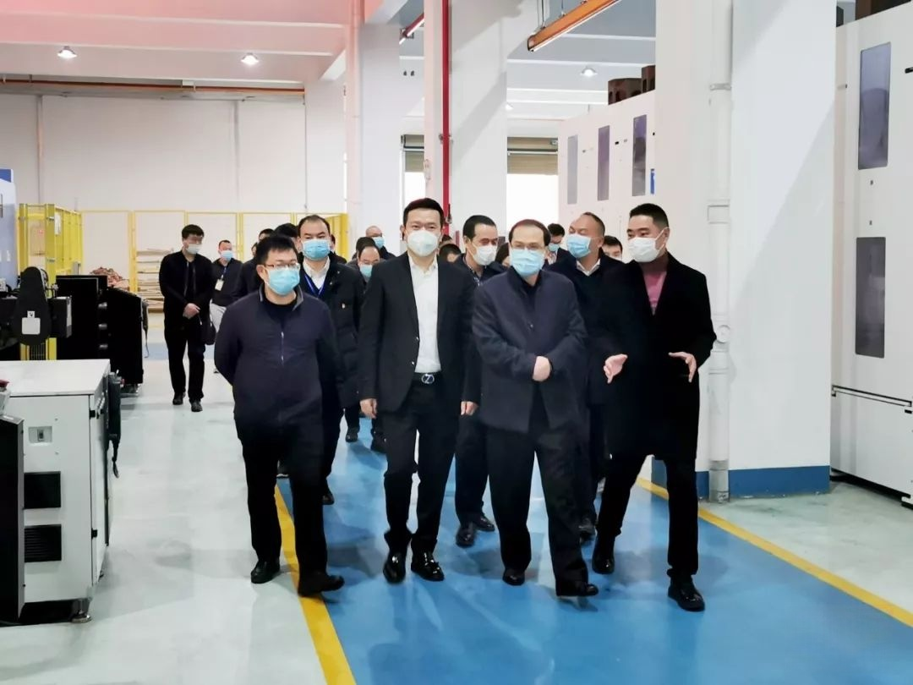

温州市政协主席陈作荣赴KIWL督导复工复产防控举措
温州市政协主席陈作荣赴KIWL
督导复工复产防控举措
2月13日，温州市政协主席陈作荣深入KIWL调研疫情防控和督导复工复产安排。龙湾区政协主席张纯芳、区政协秘书长包双二等领导参加调研。公司董事长姜伟、总经理姜洪一起汇报相关工作。
陈作荣一行实地考察了公司车间、防控宣传阵地、员工生活区等各场所疫情防控措施落实情况，详细了解企业疫情防控6S体系，关切询问员工情况、复工防控举措、复工后存在的困难等。
当前，公司结合政府相关要求，已建立实施“一人一档”机制，做好体温测量、公共场所消毒、分餐制等具体举措；并严格实行厂区封闭管理，做好各项排查工作。同时，企业为全面有序布置复工，制定预案与管控办法，确保在严密防护下实现尽早复工。
陈作荣主席对KIWL的疫情防控管理体系以及复工举措表示肯定。他强调，要统筹做好疫情防控和生产经营工作，在扎实做好疫情防控前提下，助力企业复工复产顺利展开，保障经济平稳健康发展。
